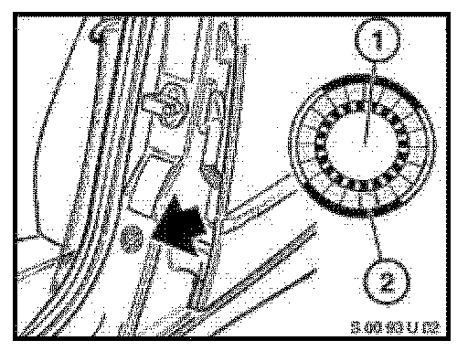
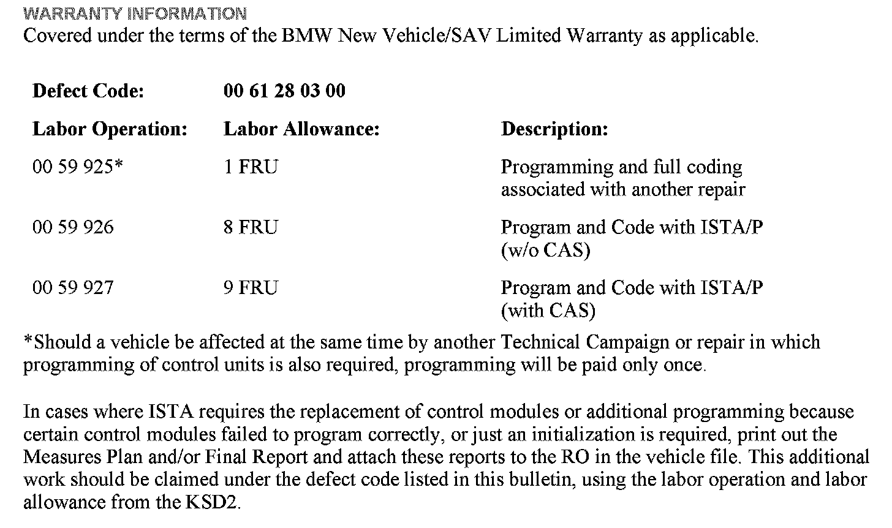

Campaign - Heated Mirrors/Windshield Washers Inoperative
PERFORM TilE PROCEDURE OUTLINED IN TillS SERVICE INFORMATION ON ALLAFFECTED VEIIICLES TilE NEXT TIME TIIEY ARE IN TilE SIIOP FOR MAINTENANCE
OR REPAIRS, AND PRIOR TO DELIVERY.
Service Action: ileated Side Mirrors and Windshield Washer Nozzles Do Not Function
E82~ E88 (1 Series)
Vehicles produced from February 27~ 2010 to December 17~ 2010
The coding data of the TB (Junction Box) is incorrect on the vehicles concerned~ which causes the heated side mirrors and windshield washer nozzles not to function.
This Service Action involves 1 Series which were produced February 27~ 2010 to December 17~ 2010.
In order to determine whether a specific vehicle has had this Service Action completed or is affected by this Service Action~ first check the B-pillar label for code number 587. If code number 587 has been punched out~ the campaign has already been performed. If code number 587 has not been punched out~ it will be necessary to utilize the "Service Menu" of DCSnet (Dealer Communication System) or the Key Reader. Based on the response of the system~ either proceed with the corrective action or take no further action.
^ Connect an approved BMW battery charger to the vehicle.
^ Start a programming session using ISTA/P 2.40.3 or higher. Note that ISTA/P will automatically reprogram and code all programmable control modules that do not have the latest sofiware.
^ For information on programming and coding with ISTA/P~ refer to CenterNet I Afiersales Portal I Service I Workshop Technology I Vehicle Programming.
^ Determine the measures plan and add ~~Complete Encoding" to the measures plan.
^ Accept Ifinish the measures plan with the control units to be programmed/coded.
^ Peform any ~~Concluding work" mentioned in the ~~Final Report".
^ Perform a vehicle test and clear the fault memory.


This Service Action has been assigned code number 587. Afier the vehicle has been checked and/or corrected~ obtain a label (SD 92-496) and:
A. Emboss your BMW center warranty number in the middle of the label (1);
B. Punch out code number 587 (2)~ printed on the label; and
C. Affix the label to the B-pillar as shown.
If the vehicle already has a label from a previous Service Action/Recall Campaign~ affix the new label next to the old one. Do not affix one label on top of another one~ because a number from an underlying label could appear in the punched-out hole of the new label.